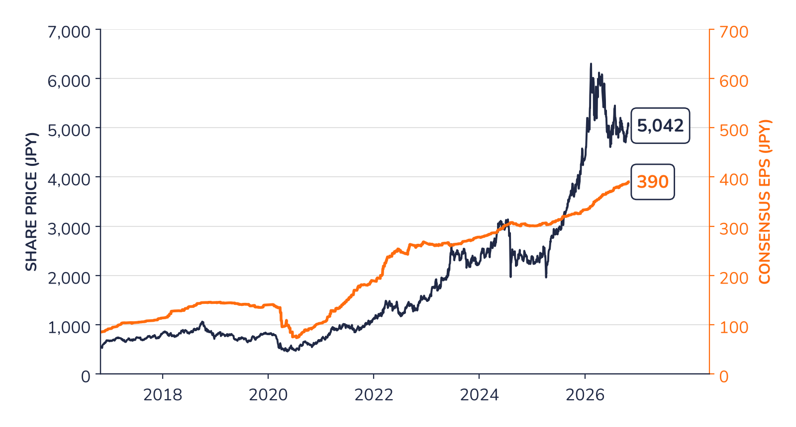
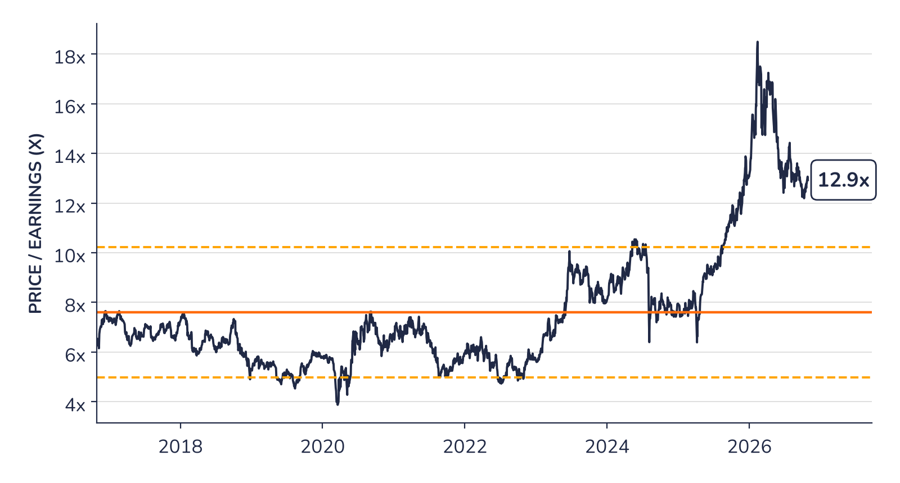

Ad-hoc opinion · Japanese trading houses
Chart 3 · Marubeni: share price and consensus earnings
Share price (left axis) and 12-month forward consensus earnings per share (right axis), in yen

Source: Syz Research, Bloomberg, company data
Chart 4 · Marubeni: valuation against its own history
Price to 12-month forward consensus earnings (dark blue), with the 10-year average of 7.6x (orange) and one standard deviation either side, 5.0x to 10.2x (dashed)

Source: Syz Research, Bloomberg, company data
Chart 3 shows the share price rising faster than consensus earnings since 2023, as investors began to pay a higher multiple for the trading houses. Chart 4 shows the size of that re-rating and its partial reversal since February. At 12.9 times, the share trades above the upper band of its 10-year history. This premium reflects higher returns on equity, larger buybacks and a steadier earnings mix than in the past.